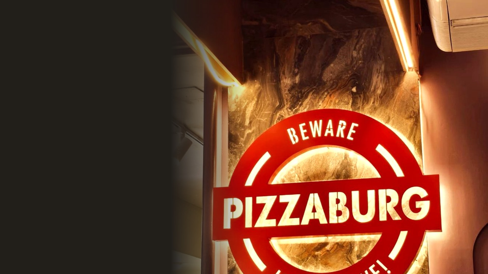
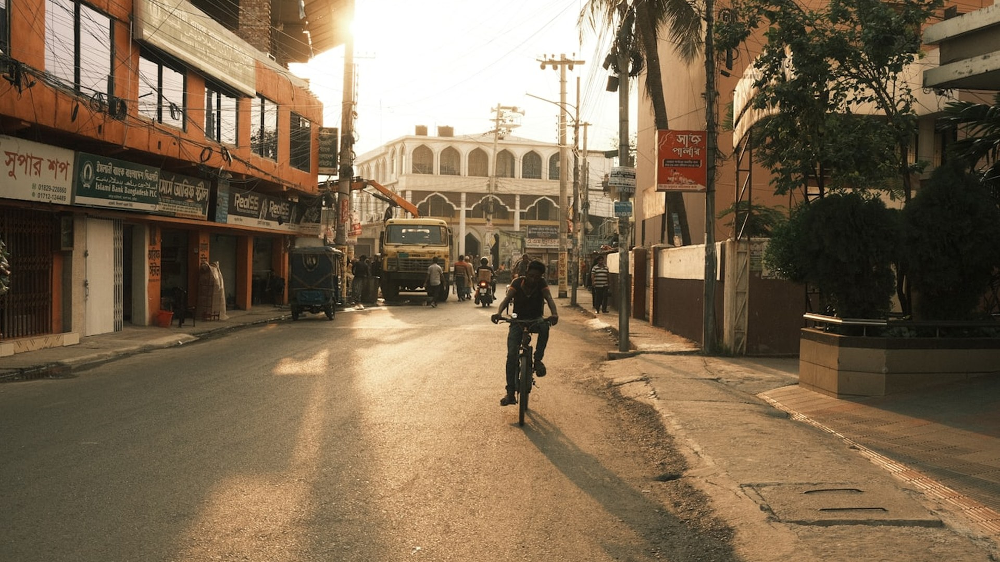

Corporate Social Responsibility at PizzaBurg
Group NEXIX · Bangladesh University · Business Ethics
A student case analysis based on public reporting — not an official PizzaBurg document.
Our team · Site visit: August 2026
Six of us built this case study from a site visit and from public reporting.
Aditya TripuraID 202511170006
Shuvo Chandra RoyID 202511170023
Asiful Islam SourovID 202511170026
Raiyan Ahmed RatulID 202511170047
Fabliha Mubarrat KabirID 202511170060
Liya AkterID 202511170072
Our site visit to a PizzaBurg outlet
Context
PizzaBurg opened in January 2018 and now runs 22 outlets with about 1,000 staff.
22
Outlets
Opened January 2018; 22 outlets at the time of our review.
1,000
Employees, approximately
Roughly a thousand people depend on how this company behaves.
4,000+
Pizzas made per day
Packaging is a daily decision here, not an annual one.
Framework & method
We assessed PizzaBurg against Carroll’s four responsibilities,
using public reporting — not a company interview.
Economic
Stay profitable
PizzaBurg operates 22 outlets and employs about 1,000 people. Staying profitable is what makes every other responsibility possible.
Legal
Obey the law
We reviewed public sources only. We found no reporting either way, so we make no claim in this tier.
Ethical
Do what is right
PizzaBurg states a focus on an inclusive workplace and on reducing plastic. We found no published target or outcome for either.
Philanthropic
Give back
This is where the evidence is strongest: iftar pizzas for mosques, and Christmas distribution to disadvantaged children.
Reported practice
PizzaBurg’s community giving is real and repeated —
but it happens only at Ramadan and Christmas.
During Ramadan, PizzaBurg provides pizzas to mosques for iftar. At Christmas, its own employees dress as Santa Claus and hand out free pizzas to disadvantaged children.
The pattern
Both are real and repeated. Both are tied to a single occasion in the calendar, and neither is reported on afterwards.
No photographs of the Ramadan or Christmas distributions are public — this is the outlet we visited.
Reported practice
PizzaBurg states a direction on inclusive hiring and on
eco-friendly packaging — but publishes no target for either.
The company’s own recycling bin, in an outlet — the plastic commitment, made visible to customers.
A PizzaBurg recruitment poster — hiring specifically for two named outlets.
Our assessment
The giving is visible. What we could not find is any way to tell whether it is working.
0
Public CSR reports found
Third-party write-ups exist. In every public source available to us we found no CSR report from PizzaBurg itself — no stated target, no measured outcome, and no named CSR owner.
Proposed initiative — 01 of 04
Buy 1 Give 1 would fund a donated meal from every sale,
so giving no longer waits for Ramadan.
We propose a designated menu item that funds one donated meal every time it is sold.
Self-funding
It scales with sales instead of competing with them, and it turns giving into a daily event rather than a seasonal one.
A PizzaBurg menu item — photo sourced online
Proposed initiative — 02 of 04
Biodegradable packaging would put PizzaBurg ahead of a
plastics ban, in a market where most people are under 25.
We propose fully biodegradable packaging across all outlets, plus an incentive for customers who return their boxes for recycling.
Moderate upfront
Bangladesh has signalled a policy direction against single-use plastics, and over half its population is under 25.
PizzaBurg packaging in use — photo sourced online
Proposed initiative — 03 of 04
Student Support is the only one of our four proposals
that also feeds PizzaBurg’s own hiring pipeline.
We propose scholarships, free meals and paid internships for financially disadvantaged university students.
Low, scalable
It can start with a handful of places and grow only once it works — and it recruits from the population PizzaBurg already hires from.
Group NEXIX — our site visit
Proposed initiative — 04 of 04
Food Rescue costs almost nothing;
what it actually needs is a food-safety handoff protocol.
We propose donating unsold, still-safe food to shelters at the end of each trading day.
Near-zero
What it actually needs is not money but a written food-safety handoff protocol agreed with the receiving shelter.
A PizzaBurg pizza — our site visit
Our four proposals — compared
Three of our four proposals need no real money upfront —
only the packaging switch does.
Initiative
Upfront cost — our own estimate
What it needs
Buy 1 Give 1
None — self-funding
A designated menu item on the standing menu.
Green PizzaBurg
Moderate
Packaging changeover plus incentive design.
Student Support
Low
Selection criteria and partner universities.
Food Rescue
None
A written food-safety handoff protocol.

PizzaBurg already contributes to society through community support and special-day initiatives.
We suggest four new CSR activities: Buy 1 Give 1, Green PizzaBurg, Student Support, and Food Rescue.
These initiatives can benefit both society and the environment.
Thank you.
Group NEXIX — conclusion · Bangladesh University